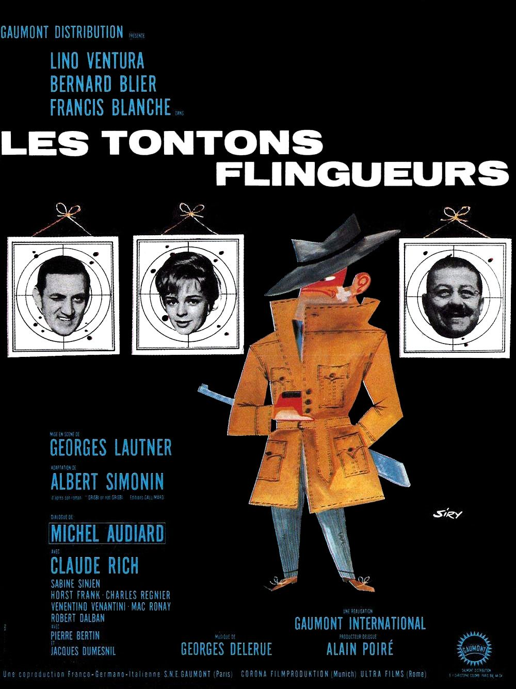

Fiche technique
| Titre | Les Tontons flingueurs |
| Réalisation | Georges Lautner |
| Adaptation | Albert Simonin et Georges Lautner, d'après le roman Grisbi or not grisbi (1955) d'Albert Simonin[1] |
| Dialogues | Michel Audiard[1] |
| Photographie | Maurice Fellous — noir et blanc, 35 mm, 1,66:1[1] |
| Montage | Michelle David |
| Décors | Jean Mandaroux |
| Musique | Michel Magne (orchestrations de Bernard Gérard)[1][8] |
| Production | Alain Poiré (producteur exécutif), Robert Sussfeld, Irénée Leriche — Gaumont (SNEG), Corona Filmproduktion (Allemagne), Ultra Film et Sicilia Cinematografica (Italie)[1][2] |
| Interprétation | Lino Ventura (Fernand Naudin), Bernard Blier (Raoul Volfoni), Jean Lefebvre (Paul Volfoni), Francis Blanche (Me Folace), Claude Rich (Antoine Delafoy), Sabine Sinjen (Patricia), Horst Frank (Théo), Venantino Venantini (Pascal), Robert Dalban (M. Jean), Jacques Dumesnil (Louis « le Mexicain »), Dominique Davray (Mme Mado), Mac Ronay (Bastien)[1][2] |
| Durée | 105 minutes |
| Sortie | 4 octobre 1963 (Allemagne de l'Ouest) ; 27 novembre 1963 (France)[1][2] |
| Entrées France | 3 353 789 selon Wikipédia, 3 321 121 selon JP Box-Office — divergence non tranchée, voir §8[1][6] |

Synopsis
Fernand Naudin vend du matériel agricole à Montauban depuis quinze ans. Il a eu une autre vie, dont il ne parle plus. Un télégramme le rappelle au chevet de Louis, dit « le Mexicain », ami d'enfance et truand de haut vol, qui meurt en lui confiant deux héritages qu'on ne peut pas tenir ensemble : ses affaires — un bowling, une maison close, un tripot, une distillerie clandestine — et sa fille Patricia, dix-sept ans, à qui il faut cacher d'où vient l'argent. Fernand hérite donc d'un empire qu'il n'a pas demandé et d'une pupille qu'il doit conduire au mariage sans qu'elle sache. Restent les associés du mort, Théo et les frères Volfoni, qui estiment que la succession leur revenait, et qui entendent le faire savoir. Entre l'inventaire chez le notaire et la noce, il y aura des explications de cave, une nuit de cuisine et une fusillade en habit de cérémonie.
Contexte de production
À l'origine, un livre noir. Grisbi or not grisbi (1955) clôt la trilogie qu'Albert Simonin consacre au truand Max le Menteur, après Touchez pas au grisbi et Le cave se rebiffe — trois romans dont les adaptations, échelonnées de 1954 à 1963, ne forment aucune continuité à l'écran[1]. Le geste décisif du film est là, et il est signé de l'auteur lui-même : coscénariste de son propre roman, Simonin abandonne « le ton sombre et sanglant » du livre pour une veine comique que Michel Audiard met en dialogues[1]. Le conflit avec les Volfoni, meurtrier dans le roman, devient une querelle de bureau. Max le Menteur devient Fernand Naudin. Me Folace, Patricia et Antoine n'existent pas dans le livre : ce sont des créations de scénario[1]. Le film ne trahit donc pas le polar par ignorance ; il le désosse en connaissance de cause, avec la complicité de celui qui l'avait écrit.
Gaumont n'y croit pas. Seul Alain Poiré défend le projet, et pour diluer le risque la production s'adosse à des partenaires allemands et italiens[1]. Cette clause financière a une conséquence visible à l'écran, rarement relevée comme telle : les jeunes gens du film — Patricia l'Allemande Sabine Sinjen, Théo l'Allemand Horst Frank, Pascal l'Italien Venantino Venantini — sont là parce que la coproduction l'exigeait, et Sinjen est doublée en français[1]. Un film sur des hommes vieillissants qui ne comprennent plus la jeunesse a donc, littéralement, une jeunesse importée et postsynchronisée.
Le tournage commence le 8 avril 1963 en région parisienne. Une grève paralyse alors les studios : l'équipe tourne en décors naturels plutôt qu'à Épinay[5]. C'est ainsi que la villa du Mexicain devient un hôtel particulier de Rueil-Malmaison loué par Gaumont — quarante jours de tournage dans une maison réelle, depuis démolie et remplacée par un parking[5] —, que la noce se filme à l'église Saint-Germain de Charonne, et que d'autres intérieurs se prennent au château de Vigny[1]. Une contrainte budgétaire et syndicale fixe donc l'échelle du film : des pièces aux dimensions vraies, où l'on ne peut pas reculer la caméra.
Le rôle de Fernand, enfin, arrive à Lino Ventura après le refus de Jean Gabin et de Paul Meurisse, et Ventura lui-même doute d'être crédible en comique[1]. Quant au titre, Audiard tenait pour Le Terminus des prétentieux, jugé trop pompeux par ses collaborateurs ; la formule est restée dans le film, sous forme de réplique[1].
Structure narrative
L'intrigue tient en une ligne — un homme hérite — et c'est délibéré. Le récit est un dispositif de succession : un mourant transmet, un survivant encaisse, des prétendants contestent. Tout ce qui, dans un polar, serait le sujet (l'argent, la mécanique du crime, le danger) est ici ramené au rang de prétexte administratif : on en parle chez le notaire, avec un ordre du jour. Le film s'organise en morceaux de bravoure autonomes — l'arrivée à Paris, l'inventaire de la succession, l'explication à la distillerie, la nuit de cuisine, la noce — que la narration relie à peine.
La scène la plus célèbre est précisément celle qui ne sert à rien. Audiard la jugeait inutile à l'écriture et elle a failli ne pas être tournée ; Lautner y tenait par-dessus tout, en hommage à Key Largo de John Huston, « film noir montrant des gangsters nostalgiques de la prohibition »[1][5]. Ce désaccord est le meilleur commentaire du film sur lui-même : ce qui reste, soixante ans après, ce n'est pas l'intrigue, ce sont les scènes qui n'avançaient rien. La règle vaut pour l'ensemble — le récit n'est qu'un fil pour tenir des situations où des hommes parlent.
La convergence finale est un choix de forme et non un hasard : tout se noue à un mariage. La cérémonie bourgeoise — église, habits, famille du fiancé — est le lieu où la pègre vient régler ses comptes, et le film y trouve sa figure centrale, deux mondes qui partagent les mêmes rites. Sur le parvis, une dernière apparition ferme la boucle : Paul Meurisse y traverse le plan dans le rôle du commandant Théobald Dromard, « le Monocle », qu'il tenait dans la série d'espionnage que Lautner tournait alors en parallèle[1]. Le film se termine donc sur une citation de son propre réalisateur — façon d'admettre qu'on n'a jamais quitté le jeu.
Mise en scène et procédés techniques
La photographie de Maurice Fellous — noir et blanc, 1,66:1 — ne fait aucune concession au registre comique : nuits, contre-jours, silhouettes en imperméable, voitures noires, caves. Le film est éclairé comme un polar et écrit comme une farce, et c'est de cet écart que naît l'effet. Rien n'y est signalé comme drôle par l'image ; les hommes sont filmés avec le sérieux qu'on doit à des professionnels, ce qui laisse au dialogue tout le travail de la comédie. La critique la plus sévère du film a d'ailleurs porté là : la réalisation « appliquée » de Lautner, qui joue « habilement du hors-champ et des cadrages », ne dissimulerait pas que le style dépend entièrement de la parole[3].
La scène de la cuisine est le cas d'école de ce que produit une contrainte. La pièce mesure environ deux mètres sur trois ; Lautner l'a dit sans détour : « dans cette pièce, je n'avais aucun recul et j'étais dans l'impossibilité de faire le moindre mouvement de caméra »[5]. Le résultat est une séquence entièrement bâtie sur des visages assis, des raccords de regard et l'attente : la comédie y naît de l'immobilité, à rebours de tout ce qu'une scène de beuverie appelle d'ordinaire. Aucun alcool réel ne fut bu pendant les prises ; en revanche, l'équipe avait préparé pour Jean Lefebvre une mixture sans le prévenir, dont les larmes sont authentiques[5].
La brutalité, elle, n'est pas feinte. À la distillerie, Ventura touche réellement le cascadeur Henri Cogan — « c'est pour ma jambe », lui glisse-t-il en souriant, en souvenir d'un match de catch de 1950 où Cogan lui avait cassé la jambe et mis fin à sa carrière[1]. L'anecdote dit quelque chose de la méthode : les coups sont filmés secs, sans emphase comique, et c'est cette sécheresse qui empêche le film de tomber dans la farce.
La partition de Michel Magne procède par monothématisme : une ritournelle unique, déclinée en blues, en swing, en hully-gully, et un motif de banjo qui accompagne les bagarres[8]. La musique ne soutient pas l'action, elle la commente — toujours d'un cran à côté du ton de la scène. Le film pousse la plaisanterie jusqu'à caricaturer son propre compositeur : Antoine Delafoy, le fiancé musicien qu'incarne Claude Rich, cherche « l'anti-accord absolu » dans un studio qui tient du laboratoire, ce qui vise assez précisément Magne, connu pour ses concerts d'infrasons Salle Gaveau dès 1954[8]. L'avant-garde est ainsi renvoyée à une prétention de jeune homme, dans un film qui ne prétend à rien.
Personnages principaux
Fernand Naudin (Lino Ventura)
Le film repose sur un contre-emploi que l'acteur redoutait : Ventura ne se voyait pas crédible dans une composition comique[1]. Cette réticence est exactement ce qui fonctionne. Fernand ne fait jamais rire volontairement ; il subit, il constate, il pèse. Sa nostalgie de Montauban — « On ne devrait jamais quitter Montauban »[1] — n'est pas une plaisanterie de province : c'est la ligne de conduite d'un homme qui a quitté un métier et à qui l'on redemande de l'exercer.
Les frères Volfoni (Bernard Blier et Jean Lefebvre)
Raoul parle, Paul a peur. Le premier tient les tirades de menace les plus citées du cinéma français — « aux quatre coins de Paris qu'on va l'retrouver, éparpillé par petits bouts, façon puzzle »[1] — mais la scène de la cuisine les montre attablés avec ceux qu'ils venaient abattre, en train de beurrer des toasts. Les Volfoni sont la démonstration du film : ces hommes n'ont plus que le vocabulaire de la violence.
Me Folace (Francis Blanche)
Le notaire du milieu, qui inventorie une succession criminelle dans la langue du droit, est la trouvaille structurelle du film : le crime y est une entreprise familiale avec ses comptes, ses actifs et son conseil juridique. C'est aussi lui qui, dans la cuisine, lâche « Touche pas au grisbi, salope ! » — le titre du premier Simonin porté à l'écran, cité comme une antienne[1]. Le film sait de quelle lignée il sort, et il le dit en riant.
Patricia et Antoine (Sabine Sinjen et Claude Rich)
La pupille et son fiancé, fils d'un vice-président du Fonds monétaire international[1], forment le corps étranger du récit : une jeunesse polie, moderne, musicale, que les tontons observent comme une espèce inconnue. Le détail de production évoqué plus haut redouble le motif — Sinjen, actrice allemande imposée par la coproduction, est doublée en français : cette jeunesse n'a pas même sa propre voix.
Thèmes
Des gangsters qui se savent finis
L'hommage revendiqué à Key Largo donne la clé : Lautner voulait des truands « nostalgiques de la prohibition »[1]. Les Tontons ne sont pas dangereux, ils sont anciens. Leur monde — codes d'honneur, argot, hiérarchies — a la solidité d'un musée, et le film le traite comme tel : on y transmet un patrimoine, on y consulte un notaire, on y marie une héritière. Cette lecture rejoint celle que la critique française fera plus tard du « cinéma de papa », où « une génération d'hommes vieillissants » affronte un monde contemporain et une jeunesse qu'elle ne comprend plus, et oppose au changement une résistance d'abord esthétique — celle du dialogue et de la mise en scène théâtrale[4].
L'argot comme dernier territoire
Ce qu'il reste à ces hommes, c'est la langue. Audiard leur donne un français de haute précision comique, qui emprunte au droit, à la médecine, à la stratégie militaire, et qui traite la métaphore comme une arme de service. Le procédé va jusqu'à l'emprunt savant : la réplique la plus célèbre du film — « les cons, ça ose tout, c'est même à ça qu'on les reconnaît » — est un arrangement d'une formule de Thomas d'Aquin[1]. C'est aussi la limite que lui oppose la critique : le film serait « le réceptacle de l'inspiration volage du parolier », où la réplique prime sur le récit, et où le dialoguiste demeure « le véritable grand manitou de l'affaire »[3]. Le reproche est juste ; il décrit simplement, en creux, ce que le film assume.
La pègre et la bourgeoisie, mêmes rites
Le vrai sujet du film est la transmission. Un mort lègue, un vivant administre, une jeune fille se marie : la mécanique est celle du roman bourgeois, appliquée à un milieu qui la parodie sans en changer une virgule. La noce finale n'est pas un décor commode, c'est la conclusion logique — il n'y avait pas d'autre lieu où faire se rencontrer les deux mondes, parce que ce sont les mêmes.
Ce que le film ne regarde pas
Il faut le dire sans détour : l'héritage de Louis comprend une maison close, dont Mme Mado gère le personnel comme un service, et dont les difficultés de recrutement fournissent une réplique de comptoir sur « le mirage africain » qui « nous fait un tort terrible »[1]. Les femmes du film sont des fonctions — la pupille, la tenancière, les pensionnaires — et le rire de 1963 passe par un ordre colonial et masculin que le film ne songe pas une seconde à interroger. Le signaler n'est pas le condamner ; c'est mesurer ce qui, dans une comédie devenue patrimoine, appartient définitivement à sa date.
Réception critique et postérité
Le film sort en Allemagne de l'Ouest le 4 octobre 1963, en France le 27 novembre[1][2]. La première semaine le place deuxième du box-office national avec 108 829 entrées dans quinze salles, dont 47 000 à Paris ; il passe le million en janvier 1964, les deux millions en mai[1].
Car l'accueil critique, lui, fut mauvais. On est en pleine domination de la Nouvelle Vague, et le film incarne tout ce qu'elle combat. Le jugement le plus cité est celui d'Henry Chapier, « Vous pavoisez haut… mais vous visez bas »[1] — formule qu'il faut ici rapporter de seconde main : aucune des sources consultées pour cette page ne donne accès au texte original de 1963, et la vérification en presse d'époque reste à faire.
Le culte est venu de la télévision. Les rediffusions font entrer les répliques dans la langue courante, puis le marché vidéo entérine le statut : 250 000 exemplaires du DVD restauré en 2002, coffret anniversaire numéroté en 2013, édition 4K Ultra HD en 2017 — premier titre Gaumont dans ce format, restauré à partir du négatif original[1]. C'est cette restauration 4K, portée par Gaumont, qui circule aujourd'hui en salles de patrimoine[7]. La consécration a fini par devenir géographique et parlementaire : une rue à Nantes, un giratoire à Montauban[1], et le 22 novembre 2013, jour de la mort de Lautner, des répliques du film citées à l'Assemblée nationale[1].
La critique, elle, a mis quarante ans à trouver quoi en faire, et l'on peut suivre ce déplacement chez un même titre. En 2009, Matthieu Santelli y voit le symptôme de l'agonie de la Qualité française : un genre qui s'épuise et à qui « il ne reste plus en ultime parade que l'exagération », donc une parodie involontaire, dont le culte est né des rediffusions[3]. En 2021, Thomas Grignon reprend le même corpus pour en renverser la valeur : ce cinéma d'arrière-garde, longtemps méprisé, se lit comme le miroir d'un déclin industriel et social, et une résistance esthétique assumée[4]. Entre les deux textes, ce n'est pas le film qui a changé.
Lautner, lui, avait sa propre explication, donnée en 2009 : « Quand nous avons tourné, nous avions tous envie de rigoler. Finalement, c'est peut-être ça, l'explication : la déconnante vieillit mieux que le tragique »[1].
Conclusion
Il faut prendre au sérieux ce que Les Tontons flingueurs fabrique en 1963 : un film noir démonté par ceux-là mêmes qui en tenaient les brevets. Simonin défait son propre roman, Audiard retourne l'argot du milieu en numéro de music-hall, Lautner filme la farce avec les lumières du polar, et Ventura joue le tout sans sourire. Ce n'est pas une comédie qui pastiche un genre de l'extérieur ; c'est un genre qui se saborde de l'intérieur, en pleine possession de ses moyens, à l'instant précis où la Nouvelle Vague le déclare mort. La critique d'époque a vu la fin d'un monde et l'a méprisée ; elle ne s'était pas trompée sur le diagnostic, seulement sur le patient.
Ce qui a survécu, ce sont les scènes inutiles. Une cuisine de deux mètres sur trois où l'on ne pouvait pas bouger la caméra, quatre hommes attablés devant un alcool imbuvable, et une conversation que le dialoguiste voulait couper : c'est de là que le film est parti pour soixante ans de rediffusions, de citations et de ronds-points. On tient là une leçon assez rude sur ce qui fait durer un film — ni l'intrigue, ni l'ambition, ni même l'accueil, mais le temps qu'on accepte de perdre avec ses personnages. Le brutal était fait maison, et l'étiquette annonçait autre chose que ce qu'il y avait dans la bouteille ; c'est le principe même de ce cinéma-là, et la raison pour laquelle on y revient.
Sources
- Wikipédia (FR), « Les Tontons flingueurs » — fiche technique, genèse et adaptation du roman, distribution, lieux et anecdotes de tournage, box-office hebdomadaire et total, répliques, éditions vidéo et postérité. Source encyclopédique de synthèse : les jugements de 1963 qu'elle rapporte (Chapier) et les propos de Lautner de 2009 y sont cités de seconde main, et le sont ici comme tels. Consulté le 10 août 2026.
- Wikipedia (EN), « Les Tontons flingueurs » — coproduction franco-italo-allemande, distribution, dates de sortie, place dans la trilogie Max le Menteur. Consulté le 10 août 2026.
- Matthieu Santelli, « Les Tontons flingueurs », Critikat, 8 septembre 2009 — lecture du film comme parodie involontaire d'une Qualité française à l'agonie, primat du dialogue sur le récit, culte né des rediffusions. Consulté le 10 août 2026.
- Thomas Grignon, « Résistance du cinéma de papa », Critikat, 7 septembre 2021 — réévaluation du cinéma populaire français des années 1960-1970, génération d'hommes vieillissants face à une jeunesse incomprise, résistance esthétique par le dialogue. Consulté le 10 août 2026.
- « Le tournage des Tontons flingueurs et la scène de la cuisine », Le nouveau cinéphile, août 2015 — date de début de tournage, grève des studios et report en décors naturels, hôtel particulier de Rueil-Malmaison, dimensions de la cuisine et propos de Lautner sur l'absence de recul, conditions de la scène de beuverie. Blog de cinéphilie compilant des témoignages publiés ailleurs : source secondaire, employée pour des éléments factuels recoupés avec [1] quand ils l'étaient. Consulté le 10 août 2026.
- JP Box-Office, fiche « Les Tontons flingueurs » (1963) — total France 3 321 121 entrées, dont 1 041 486 Paris-périphérie. Consulté le 10 août 2026.
- ADRC, fiche patrimoine « Les Tontons flingueurs » — restauration 4K Gaumont et circulation actuelle en salles de patrimoine. Consulté le 10 août 2026.
- « Michel Magne : Les Tontons Flingueurs (1963) », Vintage Music Club — monothématisme de la partition, déclinaisons (blues, banjo des bagarres, hully-gully, jazz-swing), concerts d'infrasons de Magne et caricature du compositeur dans le personnage d'Antoine Delafoy. Site de collection discographique : source spécialisée non académique. Consulté le 10 août 2026.